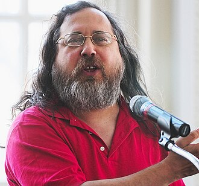

Linus Benedict Torvalds (Helsinki, Finlandia, 28 de diciembre de 1969) es un ingeniero de software finlandés, conocido por iniciar y mantener el desarrollo del kernel (en español, núcleo) Linux, basándose en el sistema operativo libre Minix creado por Andrew S. Tanenbaum y en algunas herramientas, varias utilidades y los compiladores desarrollados por el proyecto GNU. Actualmente es responsable de la coordinación del proyecto. También ha desarrollado el software de control de versiones Git.
Más información sobre Linus Torvalds (Wikipedia)
Richard Matthew Stallman (Manhattan, Nueva York; 16 de marzo de 1953), con frecuencia abreviado como «rms», es un físico, programador estadounidense, activista y fundador del movimiento del software libre, del sistema operativo GNU y de la Free Software Foundation (Fundación para el Software Libre).
Más información sobre Richard Stallman (Wikipedia)
Timothy «Tim» John Berners-Lee (Londres, Inglaterra; 8 de junio de 1955) es un científico de la computación británico, conocido por ser el padre de la World Wide Web. Estableció la primera comunicación entre un cliente y un servidor usando el protocolo HTTP en diciembre de 1990. En octubre de 1994 fundó el Consorcio de la World Wide Web (W3C) con sede en el MIT, para supervisar y estandarizar el desarrollo de las tecnologías sobre las que se fundamenta la Web y que permiten el funcionamiento de Internet.